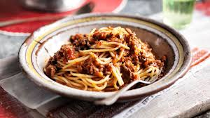

Spaghetti Bolognese

Back to Recipes
Description
Spaghetti Bolognese is a classic Italian dish made with a rich meat sauce served over spaghetti. It's a hearty and comforting meal that's perfect for family dinners.
Ingredients
- 1 pound spaghetti
- 1 pound ground beef
- 1 onion, chopped
- 2 cloves garlic, minced
- 1 (28 ounce) can crushed tomatoes
- 2 tablespoons tomato paste
- 1 teaspoon dried oregano
- Salt and pepper, to taste
- Parmesan cheese, for serving
Steps
- Cook spaghetti according to package instructions until al dente.
- In a large skillet, brown ground beef over medium heat. Add onion and garlic, cooking until softened.
- Stir in crushed tomatoes, tomato paste, oregano, salt, and pepper. Simmer for 20-30 minutes.
- Serve sauce over cooked spaghetti and top with grated Parmesan cheese.